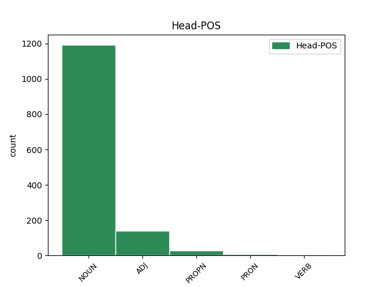

Distribution of features within this leaf

Agreement Rules sorted by frequency.
- When the dependent token is the modifer(mod) of the head token, and the head token is NOUN and the dependent token is NOUN.
1 А _ _ _ _ 0 _ _ _
2 уже _ _ _ _ 0 _ _ _
3 не _ _ _ _ 0 _ _ _
4 вижду _ _ _ _ 0 _ _ _
5 власти власть NOUN Nb Case=Gen|Gender=Fem|Number=Sing 0 _ _ _
6 сильнаго _ _ _ _ 0 _ _ _
7 и _ _ _ _ 0 _ _ _
8 богатаго _ _ _ _ 0 _ _ _
9 и _ _ _ _ 0 _ _ _
10 многовои _ _ _ _ 0 _ _ _
11 брата братъ NOUN Nb Case=Gen|Gender=Masc|Number=Sing 5 mod _ ref=115
12 моего _ _ _ _ 0 _ _ _
13 Ярослава _ _ _ _ 0 _ _ _
14 съ _ _ _ _ 0 _ _ _
15 черниговьскими _ _ _ _ 0 _ _ _
16 былями _ _ _ _ 0 _ _ _
17 съ _ _ _ _ 0 _ _ _
18 могуты _ _ _ _ 0 _ _ _
19 и _ _ _ _ 0 _ _ _
20 съ _ _ _ _ 0 _ _ _
21 татраны _ _ _ _ 0 _ _ _
22 и _ _ _ _ 0 _ _ _
23 съ _ _ _ _ 0 _ _ _
24 шельбиры _ _ _ _ 0 _ _ _
25 и _ _ _ _ 0 _ _ _
26 съ _ _ _ _ 0 _ _ _
27 топчакы _ _ _ _ 0 _ _ _
28 и _ _ _ _ 0 _ _ _
29 съ _ _ _ _ 0 _ _ _
30 ревугы _ _ _ _ 0 _ _ _
31 и _ _ _ _ 0 _ _ _
32 съ _ _ _ _ 0 _ _ _
33 ольберы _ _ _ _ 0 _ _ _
1 и _ _ _ _ 0 _ _ _
2 уньци уньць NOUN Nb Case=Nom|Gender=Masc|Number=Plur 3 mod _ ref=true
3 тучьни тучьныи ADJ A- Case=Nom|Degree=Pos|Gender=Masc|Number=Plur|Strength=Strong 0 _ _ _
4 одьржаша _ _ _ _ 0 _ _ _
5 мꙗ _ _ _ _ 0 _ _ _
Disagree Examples:
1 за _ _ _ _ 0 _ _ _
2 млт҃вѹ молитва NOUN Nb Case=Acc|Gender=Fem|Number=Sing 0 _ _ _
3 ст҃хъ _ _ _ _ 0 _ _ _
4 ѡц҃ь отьць NOUN Nb Case=Gen|Gender=Masc|Number=Plur 2 mod _ ref=1
5 наших _ _ _ _ 0 _ _ _
6 г҃и _ _ _ _ 0 _ _ _
7 їс҃е _ _ _ _ 0 _ _ _
8 х҃е _ _ _ _ 0 _ _ _
9 сн҃е _ _ _ _ 0 _ _ _
10 бж҃їи _ _ _ _ 0 _ _ _
11 помилѹи _ _ _ _ 0 _ _ _
12 мѧ _ _ _ _ 0 _ _ _
13 раба _ _ _ _ 0 _ _ _
14 своего _ _ _ _ 0 _ _ _
15 грѣш꙽наго _ _ _ _ 0 _ _ _
16 афонасьѧ _ _ _ _ 0 _ _ _
17 микитина _ _ _ _ 0 _ _ _
18 сна _ _ _ _ 0 _ _ _
1 азътарханъ _ _ _ _ 0 _ _ _
2 по _ _ _ _ 0 _ _ _
3 мсцꙋ мѣсяць NOUN Nb Case=Dat|Gender=Masc|Number=Sing 0 _ _ _
4 ночи ночь NOUN Nb Case=Gen|Gender=Fem|Number=Sing 3 mod _ ref=3
5 парꙋосом _ _ _ _ 0 _ _ _
1 а _ _ _ _ 0 _ _ _
2 срокъ _ _ _ _ 0 _ _ _
3 ѹчинил _ _ _ _ 0 _ _ _
4 на _ _ _ _ 0 _ _ _
5 д҃ _ _ _ _ 0 _ _ _
6 дн҃и _ _ _ _ 0 _ _ _
7 въ _ _ _ _ 0 _ _ _
8 говѣино говѣино NOUN Nb Case=Acc|Gender=Neut|Number=Sing 0 _ _ _
9 ѹспѣнїи усъпение NOUN Nb Case=Gen|Gender=Neut|Number=Plur 8 mod _ ref=7
10 на _ _ _ _ 0 _ _ _
11 сп҃совъ _ _ _ _ 0 _ _ _
12 дн҃ь _ _ _ _ 0 _ _ _
1 и _ _ _ _ 0 _ _ _
2 канѹн канунъ NOUN Nb Case=Acc|Gender=Masc|Number=Sing 0 _ _ _
3 сп҃сова _ _ _ _ 0 _ _ _
4 дн҃и дьнь NOUN Nb Case=Gen|Gender=Masc|Number=Sing 2 mod _ ref=7
5 приѣхал _ _ _ _ 0 _ _ _
6 хозѧиѡчи _ _ _ _ 0 _ _ _
7 махмет _ _ _ _ 0 _ _ _
8 хоросанець _ _ _ _ 0 _ _ _
1 и _ _ _ _ 0 _ _ _
2 пошлины пошьлина NOUN Nb Case=Gen|Gender=Fem|Number=Sing 3 mod _ ref=7
3 много мъногыи ADJ A- Case=Nom|Degree=Pos|Gender=Neut|Number=Sing|Strength=Strong 0 _ _ _